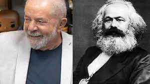

Nosso fundador, o todo poderoso Karl Marx
depois de revolucionar todo o mundo, com sua poderosa arma, o comunismo, nossa divindade decidiu se aposentar e agora abriu um bar
horas depois de nosso mestre abrir o bar ele foi flagrado com seu grande amigo,Lula 